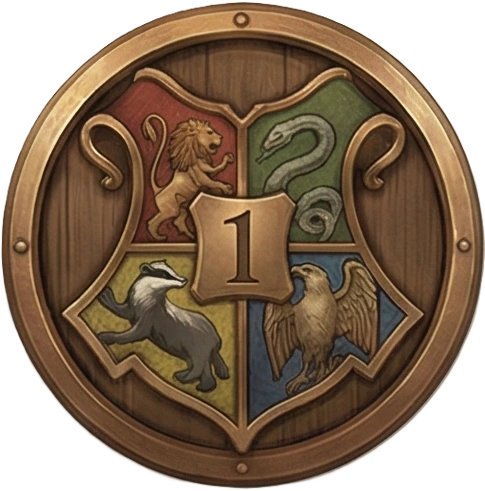
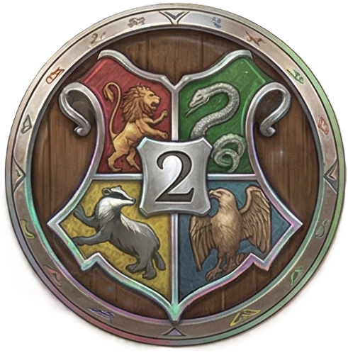
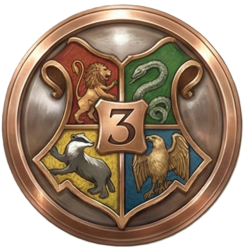
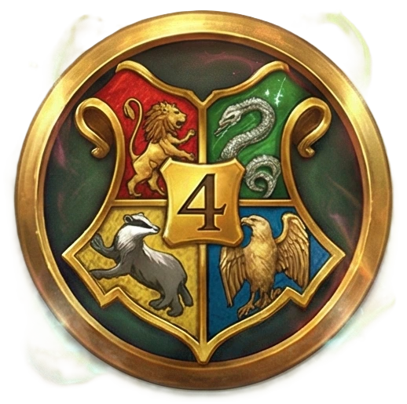
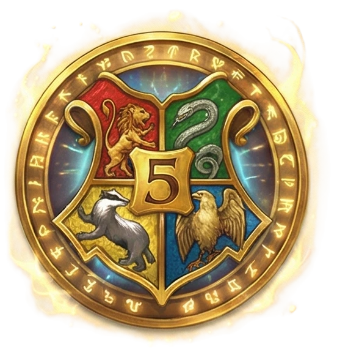
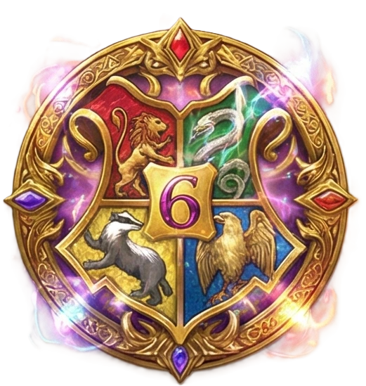
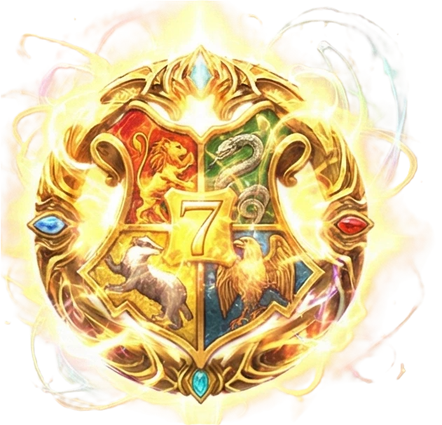

Le duel se déroule sur une grille de 10x10. Le but est simple : utiliser votre laser pour détruire le Pharaon adverse.
À chaque tour, vous devez choisir une seule action :
Note : Le Sphinx et le Pharaon ne peuvent pas se déplacer !
Progressez à travers les années pour devenir un Grand Sorcier. Chaque victoire vous rapporte des Vifs d'Or (ELO).

1ère année : Apprenti (0 - 1000 ELO)
2ème année : Initié (1000 - 2000 ELO)
3ème année : Pratiquant (2000 - 3000 ELO)
4ème année : Expert (3000 - 4000 ELO)
5ème année : Maître (4000 - 5000 ELO)
6ème année : Grand Maître (5000 - 6000 ELO)
7ème année : Sorcier Suprême (6000+ ELO)Il faut accumuler 1000 ELO pour passer à l'année suivante.